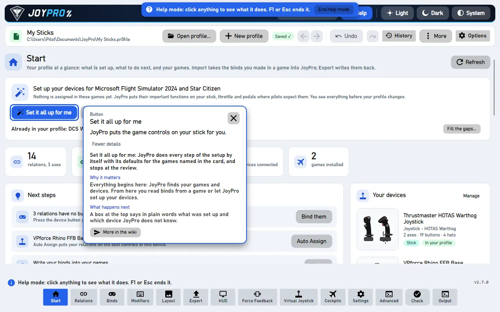
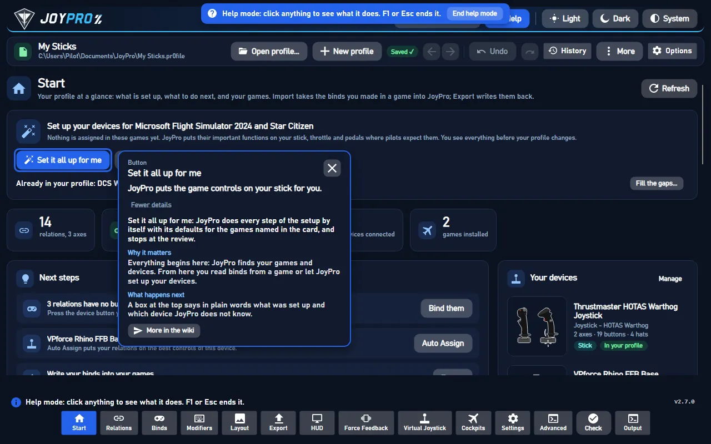
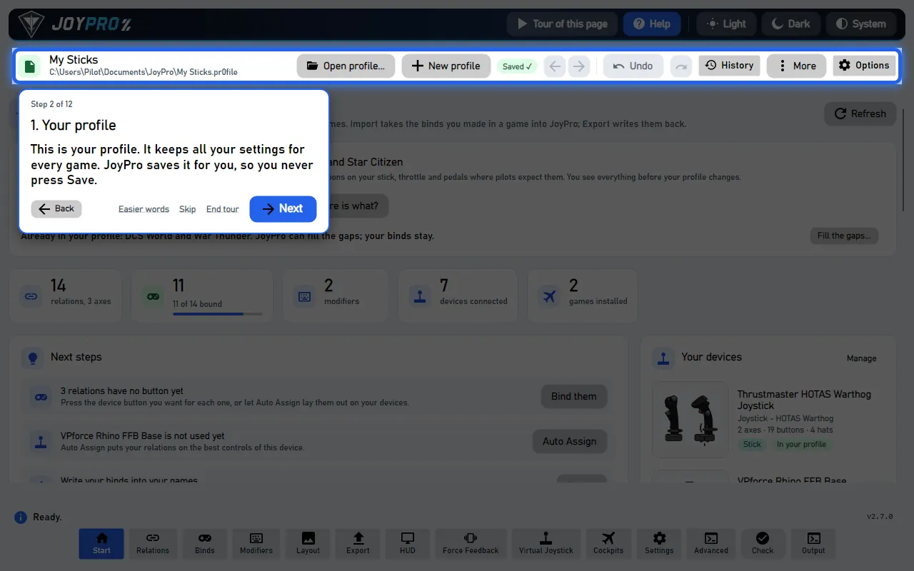
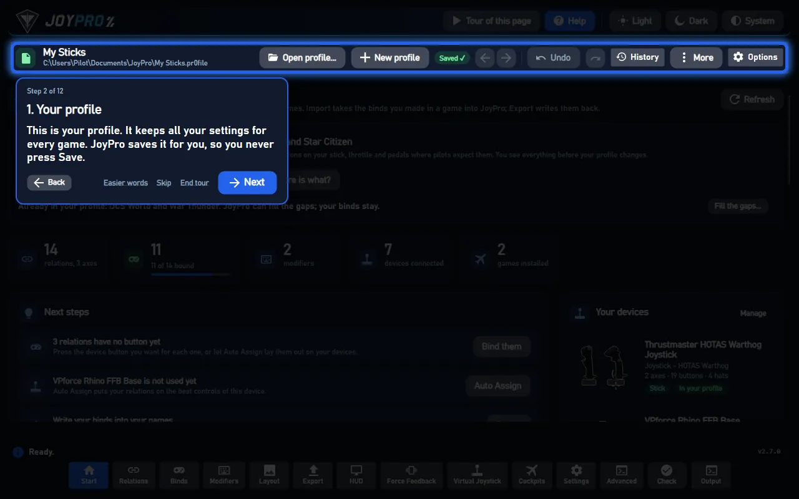
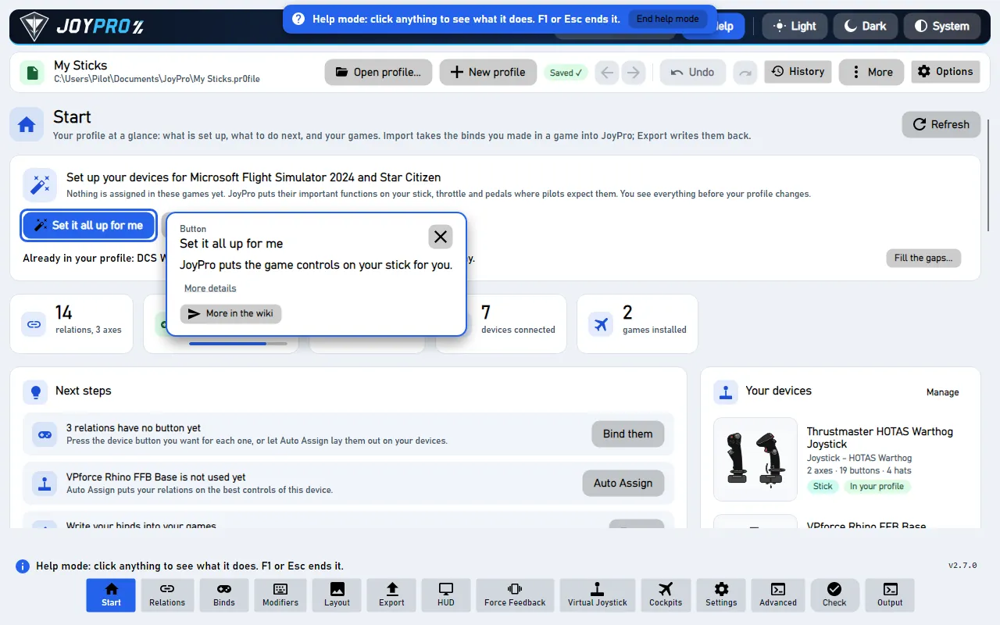
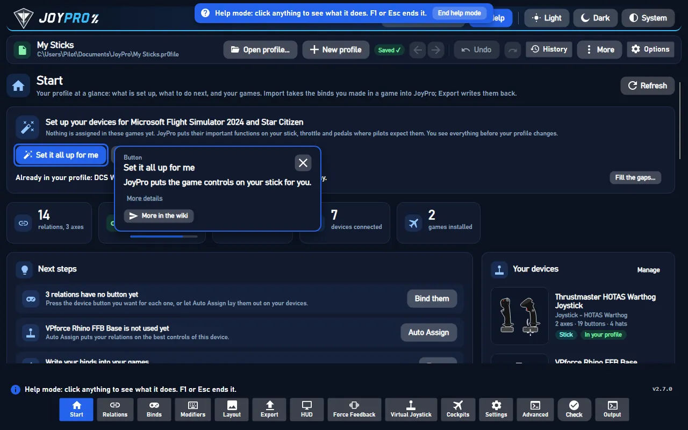

O JoyPro explica-se a si próprio. F1 explica qualquer botão em que clique. As Visitas mostram-lhe tudo, um passo de cada vez. As Palavras fáceis tornam tudo isso grande e curto.
#F1: o que faz este botão?
- Prima F1. O ponteiro do rato transforma-se num ponto de interrogação.
- Clique em qualquer botão. Ele não é executado. Uma pequena janela diz o que faz.
- Prima F1 ou Esc para parar.




Mais detalhes mostra o texto mais longo. Mais na wiki abre a página do botão neste site.
#Visitas
Uma visita faz brilhar o botão real. Espera pelo seu clique. Depois continua.
- Seguinte é o grande botão azul. Voltar recua um passo.
- Saltar deixa um passo de fora. Terminar visita para.
- Cada página tem Visita desta página, no canto superior direito, ao lado de Ajuda.




#Palavras fáceis
Palavras fáceis significa cartões grandes e frases muito curtas. É bom para crianças. É bom para quem o quiser simples.
Ligue-o num destes sítios:
- nas boas-vindas: Palavras fáceis: texto grande, frases curtas,
- na primeira janela, a mesma caixa,
- em cada cartão de visita: Palavras mais fáceis,
- em Configurações > Visitas.
Fica ligado depois de reiniciar.




#Voltar a ter as boas-vindas ou uma visita
- Ajuda no canto superior direito > Visitas....
- Configurações > Visitas > Mostrar as boas-vindas.
- Faça duplo clique em JoyPro 2 - Tour na pasta do JoyPro.


#Detalhes
- As respostas das boas-vindas: Jogar ACE COMBAT com o meu manche, DCS World ou Falcon BMS, Só pôr o meu manche a funcionar, Fazer uma visita guiada, Usei o JoyPro 1 e Sem visita. O JoyPro marca uma como sugerido, a partir dos jogos que encontrou.
- Quanto tempo? Curta mostra os passos de que precisa. Longa, com todos os extras mostra também os extras.
- Configurações > Visitas lista todas as visitas com Iniciar visita. Perguntar de novo no próximo arranque traz de volta as boas-vindas e marca todas as visitas como não vistas.
- Se fechar o JoyPro a meio de uma visita, ela continua no mesmo passo no próximo arranque.
- Com o teclado: Tab até um controlo, depois Enter ou Espaço mostra a sua ajuda.
- Detalhes: Modo de ajuda e visitas.
#Por trás da ajuda
Os textos do F1 são as primeiras frases das entradas desta wiki (build.py --help-catalog escreve gui/JoyPro.Gui/Resources/help-controls.json). Visitas: Services/Help/TourCatalog.cs. JoyPro 2 - Tour.cmd inicia JoyPro.Gui.exe --welcome. As escolhas ficam guardadas em ui-settings.json ("tours").